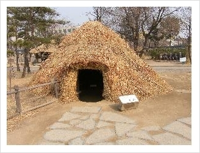
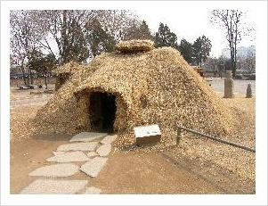

건축, 한옥
원시 인류는 추운 겨울이 되면 움집 가운데 화덕을 만들어, 거기에 장작불을 피우고 가족이 불을 중심으로 빙 둘러앉아 오순도순 다정한 시간을 보냈습니다. 우리는 학교에서 그렇게 배웠습니다. 그런데 이게 가능했을까요? 실제 움집에서 불을 피우면 천장이 다 타고 말 겁니다. 움집에서 천장이 타고나면 남는 게 쥐뿔도 없습니다. 인류는 이 문제를 해결해야 추운 겨울에 살아남을 수 있었습니다. 어떻게 하면 겨울을 안전하고 따뜻하게 날까? 인류는 두 가지 방법을 생각해냅니다.첫 번째 방법은 전인류가 공통적으로 생각해낸 방법입니다.
천장을 뚫어서 화재를 줄이는 거죠. 청동기시대 움집을 보면 윗부분이 뚫려 있지요? 왼쪽 움집 사진은 7~8년 전 국립민속박물관 마당에 설치된 복원물을 찍은 겁니다. 실제 초기 인류가 살던 움집은 집 천장이 좀더 높고 구멍도 더 컸을 겁니다. 저렇게 낮다면 움집 중앙의 구멍이 더 크고 그 위에 있는 덮개는 탈부착이 가능했을 겁니다.(아니면 화재가 났겠지요.) 그렇게 하고 화덕에 불을 놓으면 불은 위로 올라가는 성질이 있기 때문에 화재를 줄일 수 있었습니다.

그런데 아직도 해결해야 할 문제가 하나 남아 있습니다. 바로 연기입니다. 요즘은 가스를 쓰기 때문에 불에서 연기를 쉽게 연상하지 못하는 사람도 있습니다. 그러나 불과 연기는 바늘과 실처럼 전 시대를 거쳐 늘 붙어 다녔습니다. 가스가 아닌 나무를 떼면 당연히 연기가 나오니까요. 아니 뗀 굴뚝에 연기 날까. 이런 속담이 여기에서 나온 거죠. 군대 가면, 매복할 때 불을 피우면 안 된다는 걸 중요하게 가르치는 이유지요. 지금도 화재가 나면 불로 인해 죽는 이보다 연기에 질식해 죽거나 다치는 이가 훨씬 많습니다. 즉 집 안에 연기가 있으면 생활이 곤란합니다. 그래서 인류는 집 안에서 연기를 제거하려는 노력을 계속했지만 대체로 이 문제를 해결하지 못하고 산업혁명을 맞이했습니다. 이 말은 인류의 대부분은 집안을 휩쓸고 다니는 연기 때문에 고생했다는 의미겠지요. 이걸 해결하기 위해 나온 것이 벽난로입니다. 벽난로에 대한 이야기는 언제 따로 할 기회가 있을 겁니다.
인류가 발견한 두 번째 방법은 구들입니다.
구들이 개발되던 당시 우리나라는 고조선이었고, 인류학적인 시대구분으로 따지자면 청동기시대였습니다. 움집에 살면서 우리도 다른 나라 사람들처럼 화덕을 만듭니다. 그런데 이 화덕에 긴 터널을 연결합니다. 이 터널을 통해서 집 안에 번지는 연기를 빼냈습니다. 그리고 화덕에는 솥단지를 얹어 놓으니 불이 날 위험도 없습니다. 이렇게만 해도 화재를 막고 연기 문제도 어느 정도 해결할 수 있었습니다. 터널 끝에는 점차 굴뚝도 생겨납니다. 이 터널이 우리 말로 고래입니다. 쓰다 보니 고래가 따뜻하다는 것을 알게 됐습니다. 점점 고래 수를 늘리면서 여러분이 알고 있는 구들방으로 발전할 수 있었습니다. 우리는 고래를 발명하므로 해서 주거에서 난방에 관련된 모든 문제를 근본적으로 해결합니다. 이 독특한 구들 때문에 우리의 주거 역사는 다른 나라와 전혀 다른 방향으로 발전해 왔습니다.
외국 사람은 물론이고 우리나라 사람들도 중국과 한국의 주거 역사가 비슷할 것이라고 생각하지만, 우리의 주거문화는 중국과는 완전히 다르게 발전해왔습니다. 일부지역에서 나무 뼈대를 이용하여 집을 짓는 건축 방법을 빼면 중국은 오히려 서구적입니다. 우리의 독특한 민족성과 문화는 바로 이 주거문화와 밀접하게 관계를 맺고 있습니다. '그래서 한국인'을 읽으셨다면 고개를 끄덕거릴 것 같습니다. 우리는 늘 보던 거여서 구들이 특별해 보이지 않습니다. 그러나 구들만큼 특별한 것도 세상에 별로 없습니다. 구들이 없는 상황을 가정해서 생각해 보겠습니다. 한겨울이고 밖에는 영하 20~30도씩 내려가요. 구들이 없고, 물론 연탄이나 석유도 없습니다. 그냥 땔감으로 나무 정도가 있을 뿐입니다.
이런 상황에서 어떻게 겨울 추위를 견디면서 잠을 잘 수 있었을까요?
답은 바로 다음 그림에 숨어 있습니다. 한 번 찾아보시지요. 그림 분위기로 봐서는 가족사진 같습니다. 물론 느낌이 그렇다는 거죠. 이 그림은 아시겠지만, 벨라스케스가 그린 '시녀들'이라는 그림입니다. 물론 이젤 앞에 선 벨라스케스 자신의 초상화이기도 합니다. 벨라스케스가 바라보는 자리에 왕과 왕비가 있습니다. 그러니까 여러분이 있는 자리에 왕과 왕비가 있는 거죠. 그렇다면 그림에 그려진 사람들이 지금 누구를 보고 있는지 알 것 같습니다. 가장 화려하게 차려입은 소녀가 마르가리타 공주입니다. 그리고 공주 주변에는 공주를 시종하는 시녀들입니다. 이 그림은 워낙 유명합니다. (검색을 해보면 다양한 정보가 있습니다.) 화가가 그리는 대상이 그림에 잘 보이지 않으니까요. 그러나 잘 보이지 않을 뿐이지, 왕과 왕비의 모습이 그림 안에 있습니다. 모르시는 분이라면 함 찾아보세요. 아무튼 가족사진 분위기에 전혀 안 맞는 인간이 아닌 다른 종이 끼어 있습니다. 바로 '개'지요? 개가 왜 가족사진 같은 그림에 들어가 있을까요. 개의 표정이 너무나 천연덕스럽지요. 서양 그림에 애완동물이 나오는 그림은 아주 많습니다. 한때 우리 정치판을 들었다 놨던 그림도 하나 있습니다. 인상파 화가들의 리더 구실을 하던 마네가 그린 올랭피아입니다. 침대 위에 고양이인가요 한 마리 올라가 있지요. 요즘에야 가능하지만, 과거 우리나라 방에는 고양이나 개가 들어올 수 없었습니다. 그런데 너무나 천연덕스럽게 서 있습니다. 오히려 그림 밖에 누군가를 공격하기라도 할 듯 말입니다.
이들은 개를 끌어안고 잤습니다.
추우니까요. 그런데 생산은 안 하고 소비만 하는 개를 가난한 민초들은 안고 잘 수가 없습니다. 그럼 가난한 민초는 무엇을 안고 겨울을 났을까요? 비밀입니다. 상상해보세요. 중국 사람들이라고 다르지 않습니다. 여러분 많이 읽으시는 박지원 선생의 열하일기 있지요. 잘 기억해 보세요. 거기에 보면 중국인들은 개를 자신의 품 안에 넣고 다니기도 합니다. 왜 그렇겠어요. 추운 겨울을 이기기 위한 방법이 생활화 된 것이지요. 어떻게 하든 추위를 피해야 하니 개와 피부를 밀착하는데 전혀 문제가 없었습니다.
☞ 이메일 보내기
☞ 맨 위로 가시려면 누르세요